The outside is the point. Expose them from the sidewalk and the official tape. Do not warranty them with a ballot line.
Language. Homelessness. Grift. Unused law. False charge. Federal prison.
Office. I dropped District 3. On purpose. Keshia Thomas is still in the November runoff. Rene Campos already showed what California will let onto a council form.
Street. Canals that collect the night. A lobby that performs authority. A dais that talks around the statute.
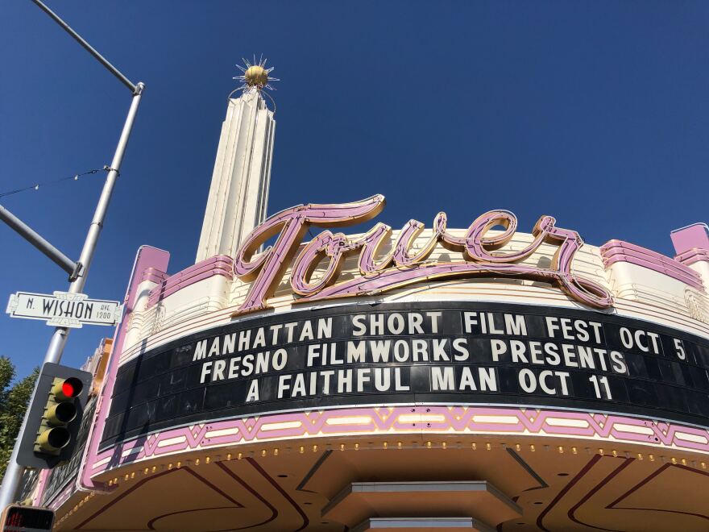
Tape 4
Tape 4 · Whistleblow or go down
Aaron Hightower · Planning Commission · August 19, 2026
Start: 1:49:12 · Listen: about 2 minutes
Listen for homelessness as crime and grift, unused canal-litter law, broken windows, whistleblow or go down. That is the cut. Do not start earlier and hope the room lasts.
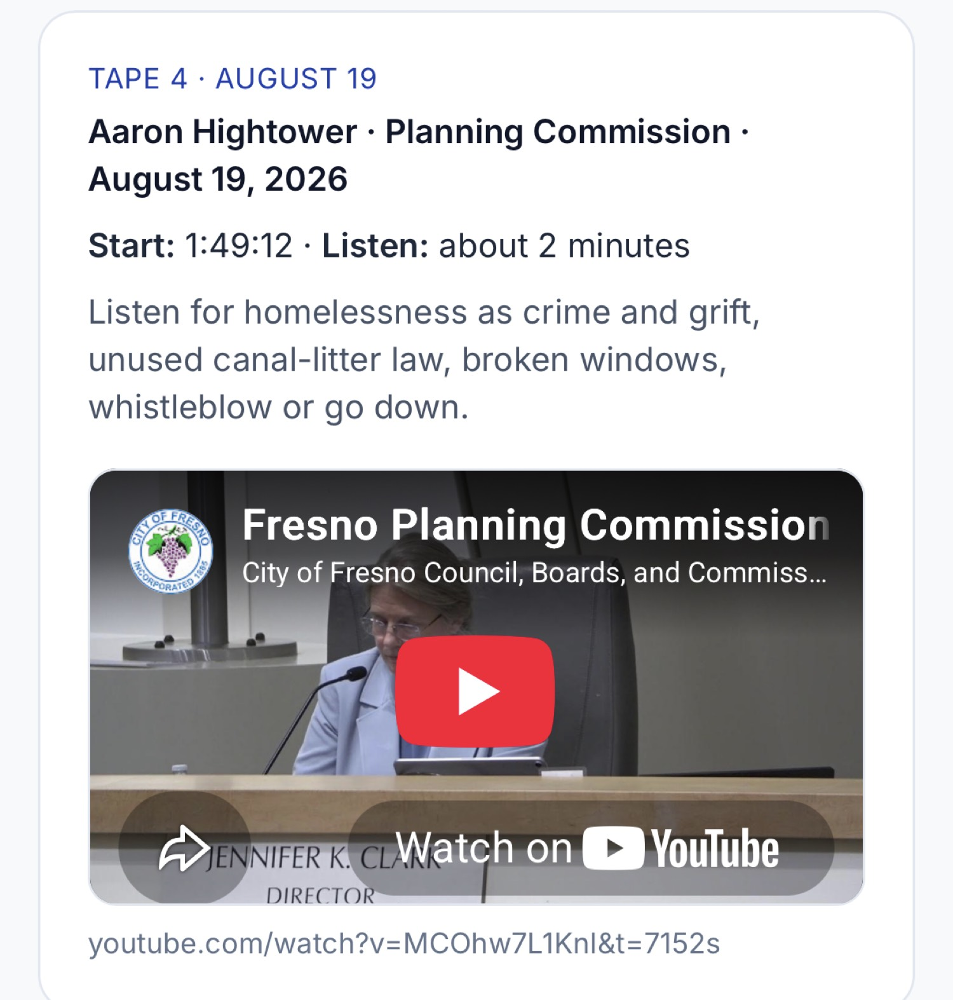

What the unused law actually is
California Penal Code 374.7 is not a vibe. Litter or dump waste into a canal, slough, river, or within 150 feet of the high-water mark and it is a misdemeanor. First conviction: mandatory fine. Repeat it and the fine climbs. A court can add litter pickup.
The laterals behind this district are not mysterious. What is mysterious is a government that can see the trash and still speak as if no written law exists.
Unused law is not mercy. Unused law is a signal. Predators read signals. So do the people who turn “services” into a billing machine.

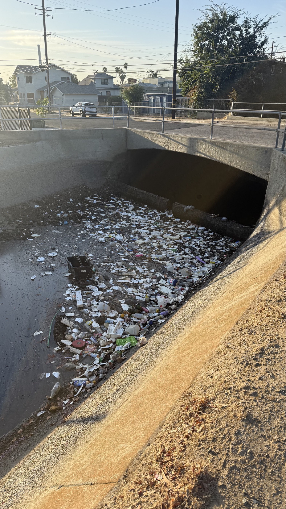
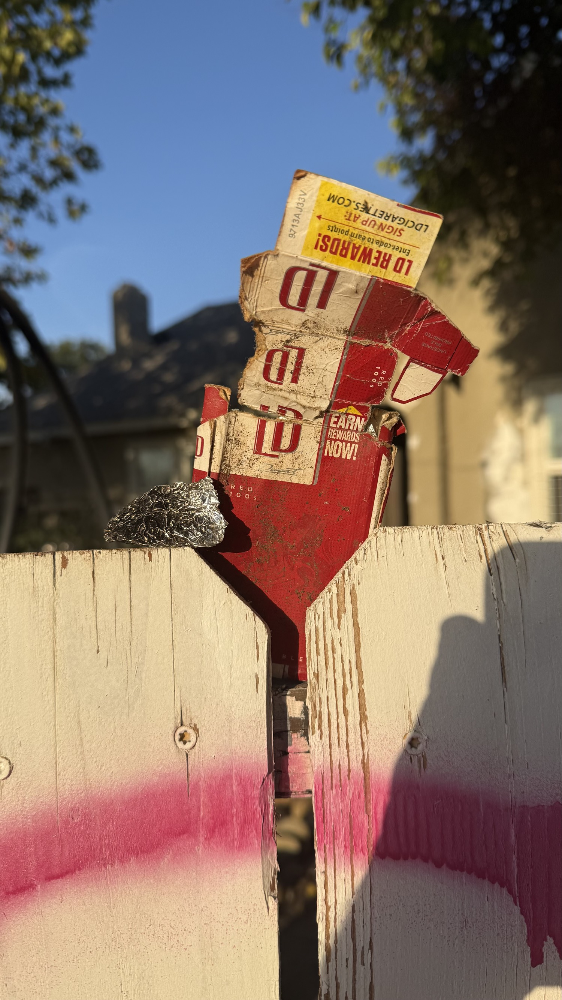

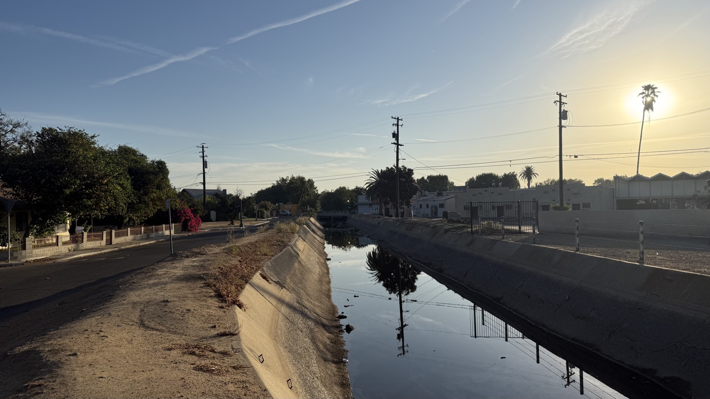
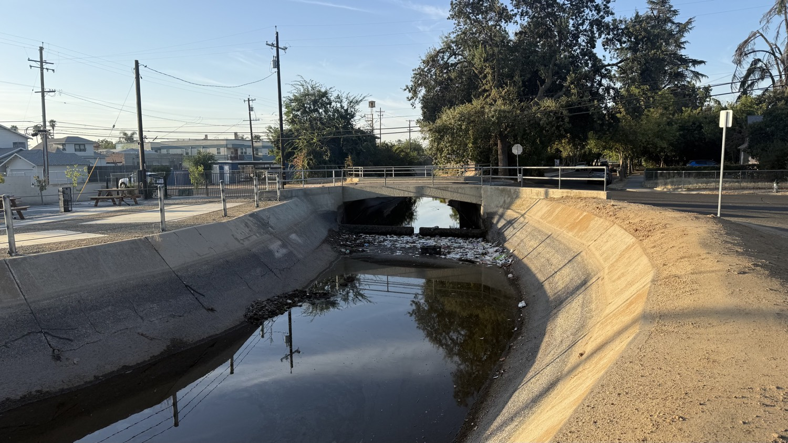

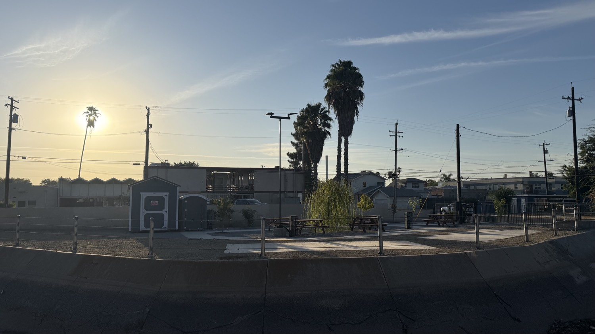
Broken windows is the same observation in a different dialect. Visible, unpunished disorder recruits more disorder. A canal full of trash next to a statute nobody will charge is a window. A racism charge that will not survive the son’s own declaration is a window. A registered child-sex-offense history treated as a campaign footnote is a window.
Leave enough of them broken and you do not get a complex social problem. You get a market.
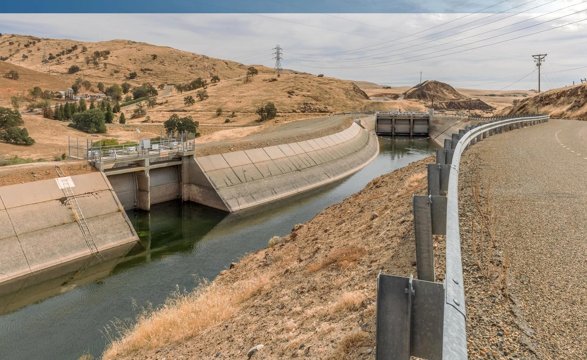
Minnesota is not a slur. It is a preview.
Local California likes to tell itself that Minnesota is somebody else’s ethnicity, somebody else’s nonprofit, somebody else’s attorney general.
That is how you sleep through a pipe that is identical in every state: child-facing federal money, emergency-era looseness, political fear of naming a network, and a professional class that calls any audit racism.
Feeding Our Future started as a child-nutrition sponsor. It became one of the largest COVID-era thefts of money appropriated to feed children. Federal prosecutors put the core scheme in the quarter-billion-dollar range. Later estimates climbed. Dozens charged. Most resolved cases are convictions.
Aimee Bock, the founder: 500 months in federal prison. More than forty-one years. Restitution in the hundreds of millions.
Abdikerm Eidleh, charged as a central organizer: taken in Mogadishu in June 2026, transferred back to Minnesota in July, thirty-one counts waiting.
Federal prison is not a metaphor. It is what happens when the local story collapses and the United States Attorney still has invoices.
We already have local smoke. Measure P / Fresno Arts Council money — about $1.5 million — went public as an FBI and Fresno Police investigation. Same zip code. Same “don’t look” habit.
If Fresno copies Minnesota’s habits, Fresno copies Minnesota’s ending. Different street names. Same penitentiary.
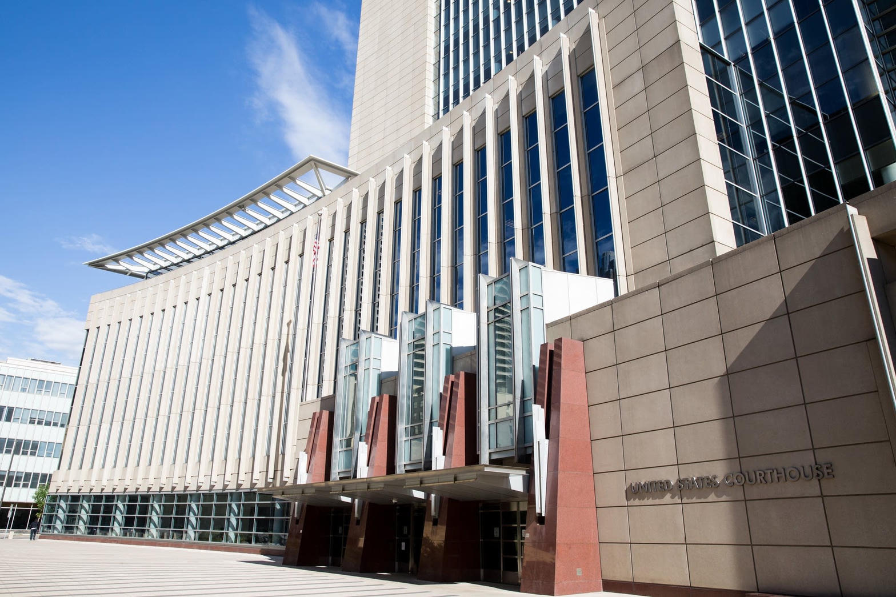
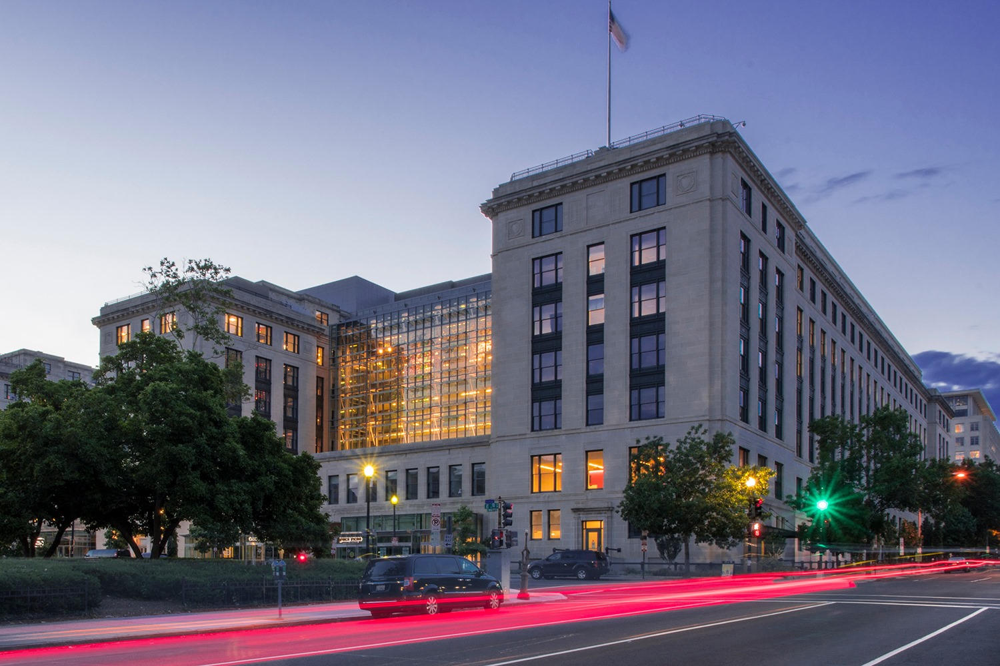
Why I stepped off the ticket
I dropped District 3 because I will not stamp my name on a cracked part. Once you stand on a ballot next to a culture, your name becomes part of the warranty. I declined the warranty.
The specific crack: Rene Campos ran for District 7 as a registered sex offender after a 2018 conviction tied to possessing child sexual abuse material. That is Penal Code 311.11 territory. The County Clerk said state law still let him run. In March 2026 the Council voted 7–0 to support a state bill barring registered sex offenders from holding office after one of them sat in chambers while schoolchildren walked the room.
I am not interested in a “lively discussion” about whether that history is compatible with parks, schools, and kids in the building.
Some steal lunch money appropriated for children. Some steal a child’s image. Some steal a man’s name with a racism charge they did not verify. The statutes differ. The contempt for the protected class is the same.
I will work the outside to expose that contempt. I will not sit on a ticket that requires me to smile next to it.
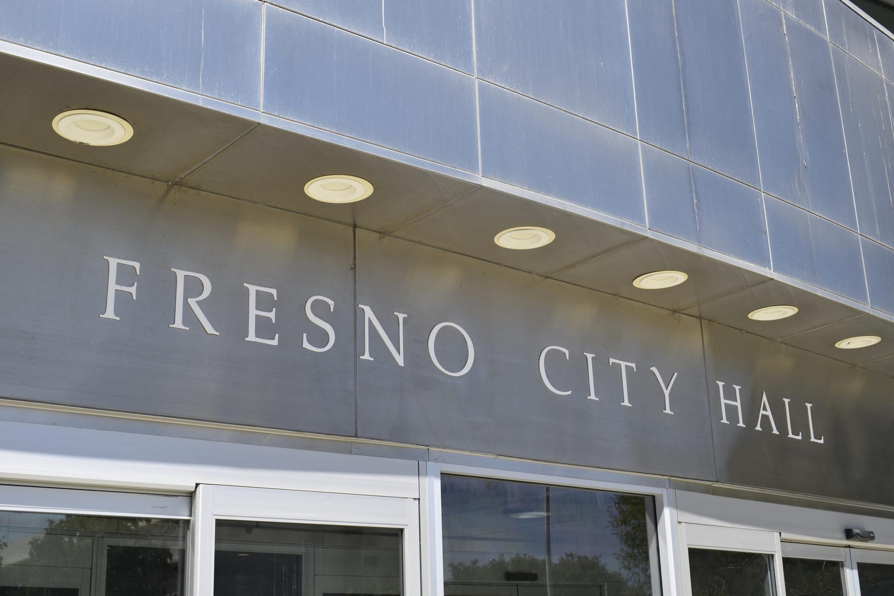
The racism charge that did not survive the son
Keshia Thomas. Fresno Unified trustee. District 3 runoff against Joaquin Arambula.
May 17, 2022, GV Wire Unfiltered: she said her middle son went to football practice “where he has Arax calling him” the racial epithet, then left Bullard for Edison.
Don Arax denied it and sued her and the district for defamation. He lost the Bullard head-coaching job. Taxpayers funded the defense. Public reporting put the combined legal spend near $370,000.
Then the floor moved in the public record, not in my kitchen.
2025 deposition, reported by the Sun: under oath she denied she had said Arax used the slur — despite the recorded podcast.
July 27, 2026: her son, Albert Alford Jr., filed a sworn declaration that the 2013 incident “wasn’t true” and that he never told his mother Arax used the slur. Through counsel he said he should have come clean sooner.
August 17: Fresno Teachers Association called for her resignation. Same window: she issued a formal apology. She had believed information that “was not accurate.” Had she known then what she knows now, she would not have made the statements. Arax’s counsel called the apology public relations. She refused to resign. Trial: December 7, 2026. A judge had already kept her in the case.
Steel-man this without becoming a fan of anyone in the lawsuit. A mother can be lied to. A public official still owes due diligence before she uses the most destructive racial charge in American life against a named employee on a recorded show.
If the first speaker is a child, the adult who carries the charge into the public square owns the verification. That is not cruelty. That is the minimum price of holding other people’s children and other people’s names.
“I believed what I was told” is an explanation for a kitchen table. It is not a governing credential.
Even if the speaker had been a child making a false allegation of racism, the parent’s job is still diligence. Schools, campaigns, and city hall are not group chats. A false racism charge can end a career, split a campus, and train a city to treat every later audit as hate.
That is how fraud survives. Not only with fake invoices. With a moral tripwire that detonates inspection.
What I will mark as my account
I was falsely accused of being a pedophile after I first spoke at City Council. That is my account of what was done to my name.
The word is not a vibe. If it is true, call the police. If it is false, the people who floated it used children as ammunition.
A city that will let a 311.11 convict sit in chambers with schoolchildren in the building, and will also float a pedophile smear at a resident who showed up to talk about public safety, has lost the plot coming and going.
Christina — Kristina — Mansfield is the lobby version of the same move, in my experience: an appeal to a journalism degree as if the degree were a warrant, opera projected into the public airspace outside chambers, then a public attack on whoever carries the information out of the building.
I called her out. I am calling Keshia Thomas out.
I am not asking you to treat the lobby description as a court finding. I am asking you to notice the method. Authority is not a diploma. Authority is a verified sentence.
If you use race, child-harm language, or “I have credentials” to freeze inspection of crime, grants, and slander, you are not protecting the vulnerable. You are protecting the racket.

The position
Public safety is not a vibe. Child-serving money is not a community mascot. Unused statutes are not mercy.
Minnesota already ran the experiment. Federal prison is what “impunity” looks like after the story dies.
I will not share a ballot with people I regard as predators of general public safety. I will name them from the outside.
Parents and so-called leaders owe due diligence. A child’s allegation, a podcast allegation, a lobby performance — none of those replace evidence.
Policies that cannot survive an audit are not compassion. They are inventory for the next indictment.
The tape is still there. The canals are still there. 374.7 is still there. 311.11 is still there. The Feeding Our Future docket is still there. The Arax case is still on a December calendar.
I stepped off the race so my name would not ride with the people who need those files to stay unread.
Work with the authorities who will actually enforce the law — including federal authorities when the dollars and the crimes are federal — or watch the Minnesota scene play on Olive and Belmont.
I chose the outside. I intend to keep using it.
Whistleblow. Or go down with the people who thought the lobby was safer than the record.
High Tower District
721 E La Sierra · Fresno · 93728
Document. Display. Enforce.
Record
City of Fresno Planning Commission, Aug. 19, 2026, official YouTube, 1:49:12. Cal. Penal Code §§ 374.7, 311.11. U.S. Attorney, District of Minnesota: Feeding Our Future sentencings 2026, including Bock 500 months; Eidleh transfer from Somalia. Fresno Bee / FTA / SJV Sun reporting on Thomas, Alford Jr. declaration, apology, ~$370k defense spend, Dec. 7 trial. ABC30 reporting March 2026 on Campos and the 7–0 chambers vote. KMJ / local reporting on Measure P / Arts Council investigation. Canal and porch photographs from the High Tower District daily record. Lobby and first-council smear marked as the author’s account.